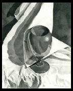
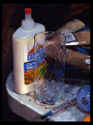
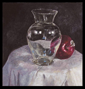
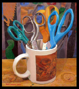
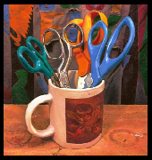
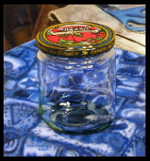

Pencil Still Life - 2006Still Life with Glass - Oil on panel - 2008Vase & Apple - Guache on paper - 2009 - I should work more with guache!Bouquet Number One - Oil on panel - 2007Bouquet Number Two - Oil on panel - 2007Tripod - Oil on panel - 2007 - This picture tells the story of how I made the other paintings- except you can't see the camera.Jar Still Life - Oil on panel - 2007